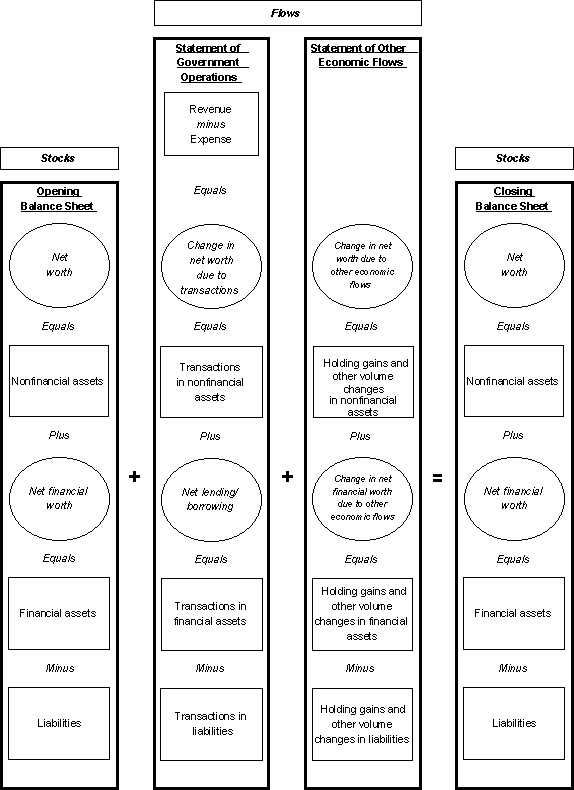

|
IMF Statistical Topics
Government Finance Statistics Government Finance Statistics Manual 2001 (GFSM 2001)Companion Material Government Finance Statistics Manual 2001 (GFSM 2001), Research |
|
|
|
(GFSM 2001) Ordering Information for a hard copy December 19, 2001 The IMF Statistics Department's Government Finance Statistics Manual 2001 (GFSM 2001) updates the 1986 edition of A Manual on Government Finance Statistics (GFSM 1986). The 2001 edition describes an integrated statistical system that is harmonized, to the extent possible, with the 1993 edition of the System of National Accounts (1993 SNA). The GFSM 2001 is intended to be a reference volume describing the GFS system. It covers concepts, definitions, classifications, and accounting rules, and it provides a comprehensive analytic framework within which the statistics can be summarized and presented in a form appropriate for analysis, planning, and policy determination (Figure 4.1). The use and interpretation of government finance statistics, however, is beyond the scope of the GFSM 2001, and practical guidance on the compilation of the statistics is reserved for the GFSM 2001 companion material. |
| Contents: The complete manual in one PDF file (885 K pdf file).
Use the free Adobe Acrobat Reader to view PDF
files. Table of Contents Foreword Preface Chapter 1: Introduction. Summarizes the scope and purpose of the GFS system and provides a broad overview of the contents of the manual. Chapter 2: Coverage of the GFS System. Defines the general government sector as a set of resident institutional units, where an institutional unit is defined as it is in the 1993 SNA. It also describes the central, state, and local government subsectors and the extension of the general government sector to the public sector by including government financial and nonfinancial corporations. The annex discusses the nature and classification of Social Protection Schemes. Chapter 3: Flows, Stocks, and Accounting Rules. First describes the flows and stocks that are recorded in the GFS system. All data on units of the general government sector are either flows (mostly transactions) or stocks (assets, liabilities, and net worth). It then summarizes the accounting rules used to record the flows and stocks. These rules relate to the type of accounting system used, time of recording, valuation, and miscellaneous other topics. Chapter 4: The Analytic Framework. Presents a set of financial statements that integrates all of the economic flows and stocks of the general government sector and highlights summary measures of government activities that are considered important for the study of fiscal policy. Chapter 5: Revenue. Defines revenue as an inflow of resources from a transaction that changes net worth, provides a classification of types of revenue, and describes in detail the contents of each classification category. Chapter 6: Expense. Defines expense as an outflow of resources from a transaction that changes net worth, provides two classifications of types of expense (functional and economic), and describes in detail the contents of each classification category. The annex provides the Classification of the Functions of Government. Chapter 7: The Balance Sheet. Defines the assets and liabilities included in the GFS system, provides guidelines on methods of estimating the current market value of various types of assets and liabilities, provides a classification of types of assets and liabilities, and describes in detail the contents of each classification category. Chapter 8: Transactions in Nonfinancial Assets. Describes the classification and characteristics of the transactions in nonfinancial assets such as valuation and time of recording. Chapter 9: Transactions in Financial Assets and Liabilities. Describes the characteristics of transactions in financial assets and liabilities such as valuation, time of recording, and arrears, and their classification by sector, residence, and financial instrument. Chapter 10: Other Economic Flows. Defines other economic flows as all changes in the value or volume of assets and liabilities that do not result from transactions, such as changes in the market price of a security or the discovery of a mineral deposit. It also provides a classification of types of other economic flows and describes in detail the contents of each classification category. Appendix 1: Changes from the 1986 A Manual on Government Finance Statistics. Summarizes the major differences between the GFS system described in the GFSM 1986 and the system described in this manual. Appendix 2: Government Debt Operations. Describes various debt-related transactions and other economic flows in which a government unit may be involved and how they are recorded in the GFS system. Appendix 3: Government Finance Statistics and the System of National Accounts. Describes the relationship between the GFS system and the 1993 SNA. It indicates how the data compiled for the GFS system can be used as an input to the compilation of the general government sector in the 1993 SNA. Appendix 4: Classification. Provides the Classification Coding System for GFS. Figure 4.1: Structure of the GFS Analytic Framework  |